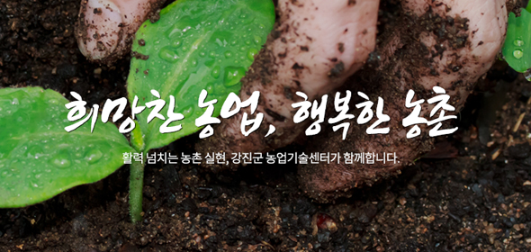
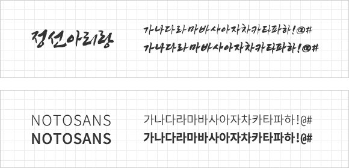

관공서 프로젝트 디자인으로 강진농업기술센터를 리뉴얼 하였습니다. 기존 사이트에서는 홈페이지 내의 다양한 정보에 비해 인터페이스가 불편하고 정보를 한눈에 파악하기 어려웠습니다. 사이트 리뉴얼을 통해 편리성이 좋은 UI&UX를 만들고, 사용자가 필요로 하는 유용한 콘텐츠를 추가하였습니다.
주색은 강진의 푸른 자연을 나타내는 블루색상으로 사이트 전반을 편안하고 안정적이게 해주며, 녹색을 사용하여 맑고 깨끗한 강진의 이미지를 표현하였습니다. 포인트 색으로는 행복한 느낌을 주는 다홍느낌의 색상을 선택하여 밝고 긍정적인 강진 농촌을 표현하였습니다.
희망찬 농업이라는 타이틀에 맞게 희망의 상징인 새싹을 백그라운드에 넣고 힘 있어 보이는 캘리그라피를 가운데에 배치하여 메인 비쥬얼의 조화를 이룰 수 있도록 작업하였습니다.

타이틀 서체는 직접 쓴 듯한 캘리그라피 느낌을 주는 정선아리랑체를 활용하고, 본문 서체는 명시성과 가독성이 좋은 본 고딕을 활용하여 깔끔한 느낌을 주고자 하였습니다.

기존 관공서 홈페이지는 주로 “딱딱하다”라는 느낌을 많이 받아왔습니다. 그래서 저는 이번 리뉴얼을 통해 지금까지 느껴왔던 정해진 틀에 작업하는 것이 아닌, 사소한 콘텐츠에서부터 통통 튀는 느낌을 주도록 하여 남녀노소 누구나 다가가기 쉽도록 밝은 분위기를 연출하기 위해 노력하였습니다.
자칫 심심해 보일 수 있는 조직도 콘텐츠를 기획 당시 원하던 밝은 느낌의 이미지로 작업하였습니다. 여러 색감을 가진 강진군 로고를 디자인에 접목시켜 미래지향적인 강진의 이미지와 맑고 청아한 강진의 진취적 기상을 잃지 않도록 하였습니다.